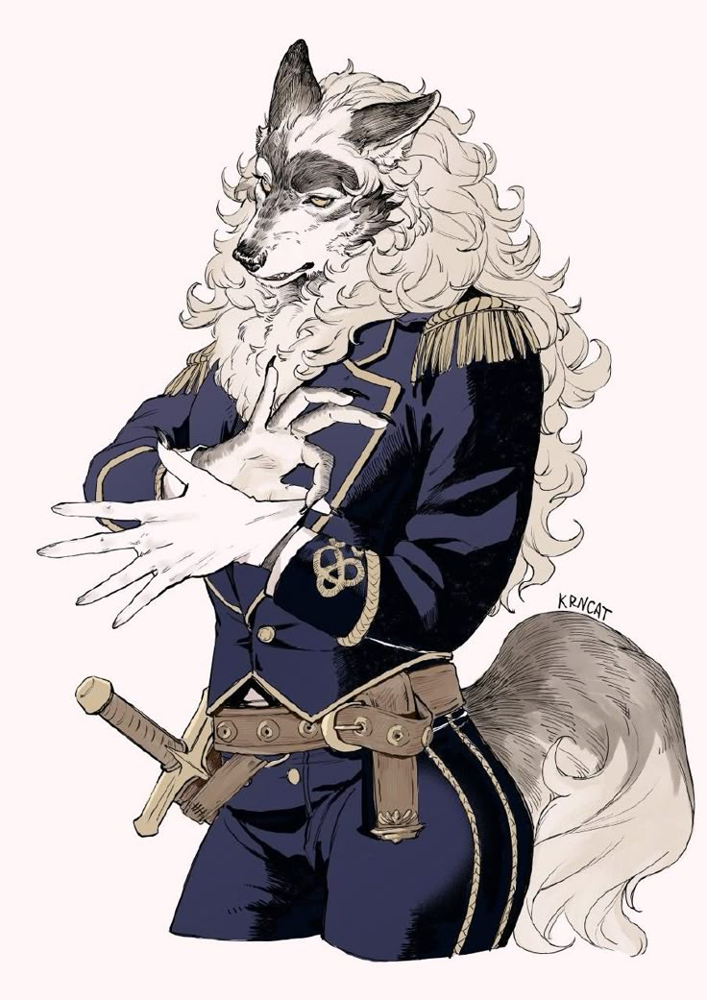
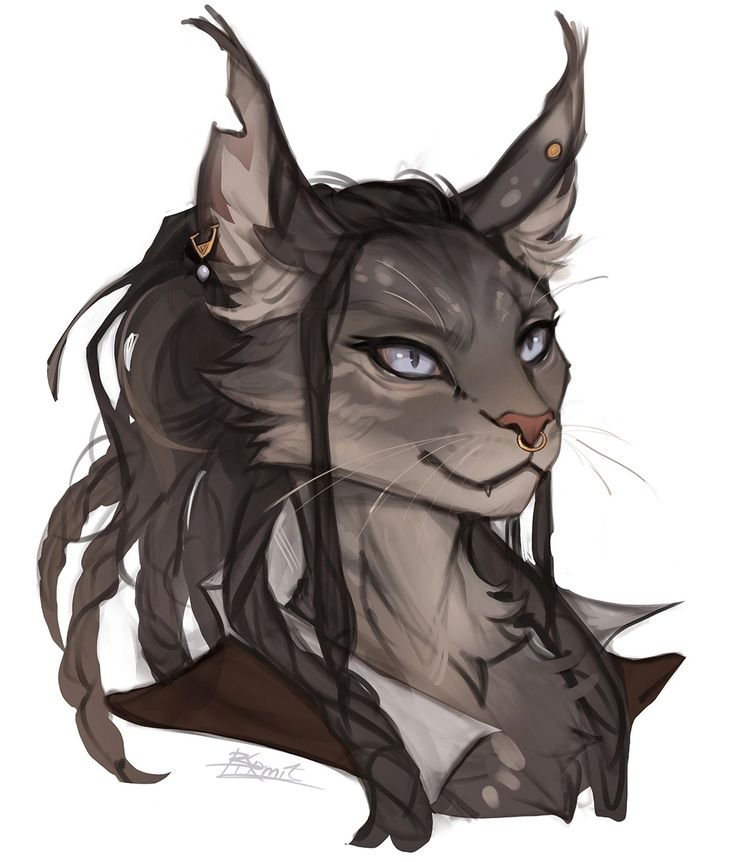
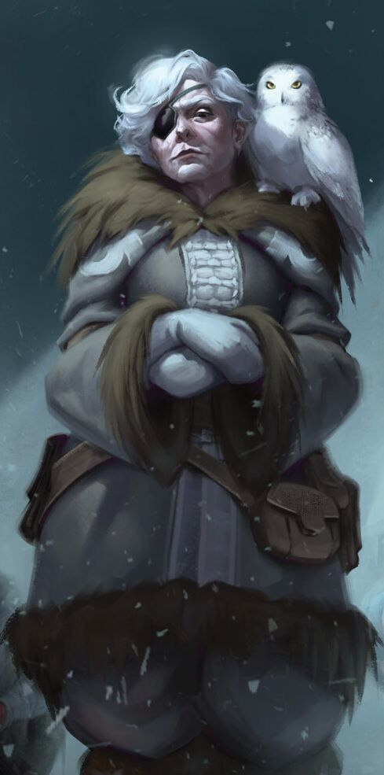
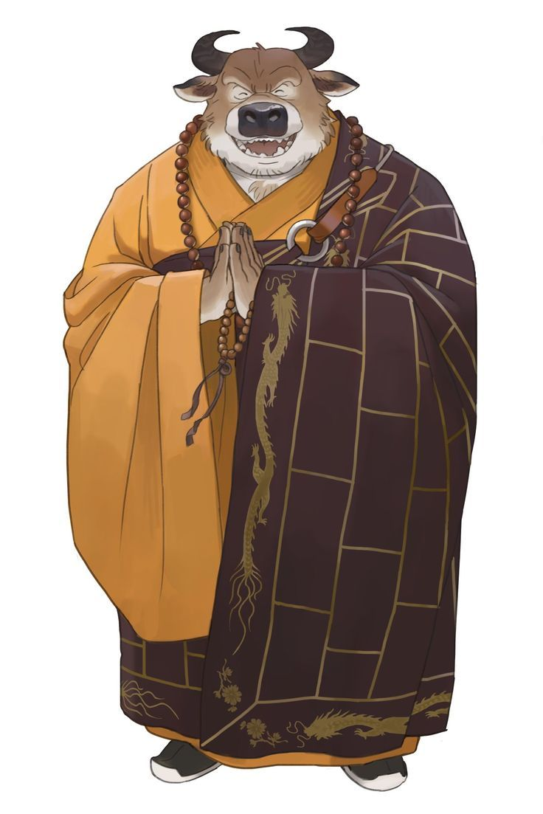
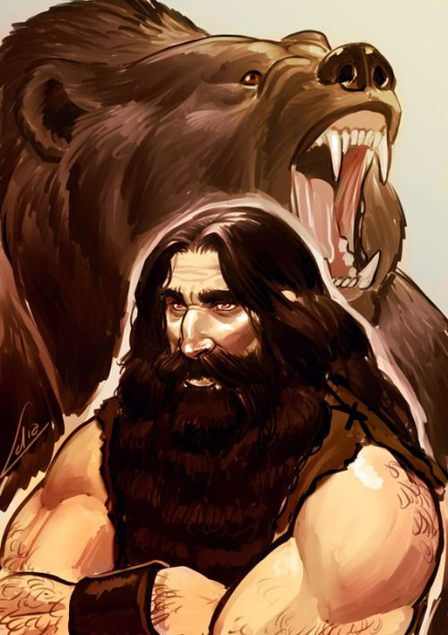

Nascido do medo — não da esperança —, o Parlamento Regencial existe desde que o povo de Leskie entendeu, tarde demais, o preço de ter queimado uma deusa. Temendo que a mesma sorte, ou uma maldição, recaísse sobre Anno, filha nascida das cinzas de Leskie, ergueram um conselho para vigiar e auxiliar a Maré Cheia, garantindo que nenhuma decisão do trono voltasse a pesar sozinha sobre os ombros de uma só pessoa. Diferente dos demais reinos, onde o poder se transmite por sangue ou nomeação, aqui cada território escolhe, por voto, quem falará em seu nome — e a cada cinco anos, essa escolha pode ser refeita por inteiro.
✦ OS PARLAMENTARES ELEITOS

✦ parlamento regencial
Costa Lebus
Veterana das fortalezas de Smotritel antes de trocar a espada pela tribuna, Costa foi reeleita por quatro mandatos consecutivos — um recorde entre os assentos regionais. Defende que a disciplina militar deveria orientar também as leis do reino, e vê no Parlamento a continuação do mesmo juramento que fez quando jovem recruta: proteger, ainda que isso signifique impor limites ao próprio povo que a elegeu.
pensamento Liberdade sem fileira é só um exército esperando pra ser derrotado. Eu não fui eleito pra agradar — fui eleito pra que Smotritel continue de pé.

✦ parlamento regencial
Azin Blomf
A parlamentar mais jovem da história recente, Azin cresceu entre as bancas do mercado de Tulen, ouvindo promessas de nobres que nunca cumpriram nada além da própria reeleição. Concorreu por rancor, venceu por sorte e permanece por teimosia — determinada a provar que quem cresceu vendendo peixe entende mais de sustento do povo do que qualquer sobrenome antigo.
pensamento Vocês passaram séculos escolhendo reis. Eu só peço cinco anos de cada vez — é o suficiente pra eu errar rápido e consertar mais rápido ainda.

✦ parlamento regencial
Gina Vellynni
Perdeu o olho — e quase a vida — numa expedição à Candeia Montanhosa, muito antes de qualquer urna existir em Kholod. Sua coruja, Sten, a acompanha desde então, e poucos no Parlamento ousam contestar um palpite seu: distinguir discurso de verdade é ofício que se aprende na neve, não na tribuna. É a memória viva da casa — a única que já viu o mesmo erro se repetir mais de uma vez.
pensamento Já vi seis eleições e três guerras que quase começaram entre uma e outra. Aprendi a desconfiar de qualquer promessa que caiba num mandato só.

✦ parlamento regencial
Monge Rumi
Escolhido pelos mosteiros espalhados pelo reino a cada cinco anos, no mesmo ciclo dos demais assentos, Rumi chega às sessões descalço e em silêncio — e só fala depois que todos os outros já gritaram o que tinham para gritar. Alguns acreditam que seu sorriso largo esconde paciência; outros, que esconde o quanto já perdeu a paciência com todos eles.
pensamento Vocês debatem por horas o que um monge resolveria com uma pergunta: isso protege alguém, ou só protege o seu cargo?

✦ parlamento regencial
Vophis Mettad
Caçador e guia das terras selvagens além das fazendas de Bubentcy, Vophis nunca quis uma cadeira — foi arrastado até a capital pelos próprios vizinhos, cansados de decisões tomadas sem nunca perguntar a quem vive da terra e da caça. Assume forma de urso quando a paciência acaba antes do debate, e essa fera que carrega por dentro é presença tão constante nas sessões quanto seu voto contrário a qualquer lei que ele não entenda de cor.
pensamento Não confio em papel que eu não posso segurar, nem em promessa que eu não possa cobrar olhando no olho. Por isso eu vim: pra que alguém aqui dentro fale a língua de quem tá lá fora.